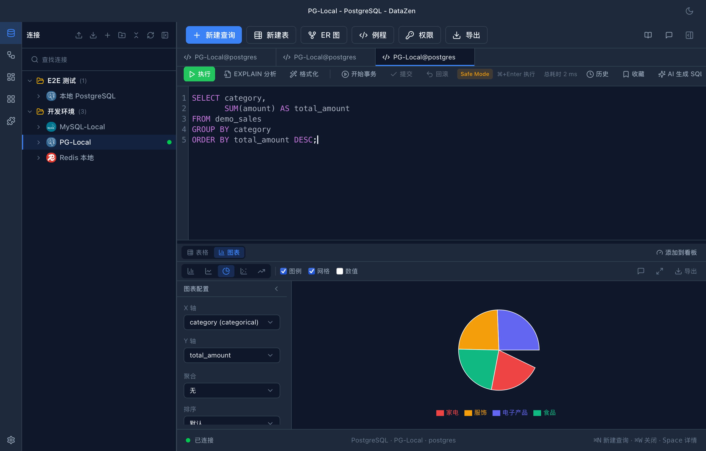

One-Click Switch
Table ↔ chart, zero config
After running a query, switch to chart view with one click above the results. On first switch, smart recommendations run automatically: based on field types and row count, the best chart type and axis configuration are suggested.
- Time column + numeric column → line chart (time series)
- Category column + numeric column → bar / pie chart (comparison and distribution)
- Multiple numeric columns → scatter plot (correlation)
- Single numeric column → area chart (trend)

Five Chart Types
Covers common analysis scenarios
Line, bar, pie, scatter, and area charts — axes, aggregation, and grouping dimensions are all configurable via the toolbar.
- Numeric aggregation: sum / avg / count / min / max
- Multi-dimension grouping: series by a second category column
- Tooltips show field names, values, and percentages (pie charts)
- 5 preset color palettes + dark theme support

Export & Reuse
Take results with you
Export charts as high-resolution PNG or vector SVG — ready for documents, slides, and reports. Chart configuration is remembered per query; switch back to table and return without losing settings.
- PNG (with dark background) / SVG export formats
- Chart config persisted per query
- Workflow step results also support charting
